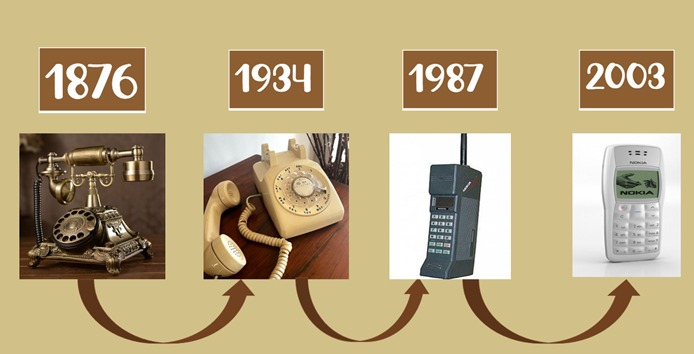
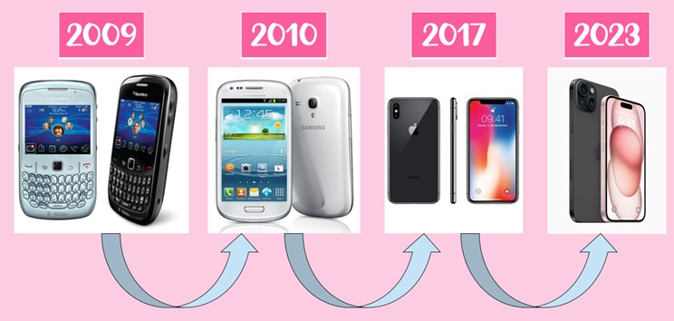

La evolución en la comunicación ha sido un hecho muy grande para la historia, ya que pasamos de saber muy poco de personas de muy lejos a tenerlo todo con tan solo con abrir una aplicación.
Uno de los medios de comunicación más populares es teléfono, pero hay muchos más que este.
Antiguamente más que todo nos comunicábamos por medio de cartas, este medio era muy problemático ya que si se requería mandar la carta muy lejos se demoraba mucho tiempo.
Más después llegaron los primeros teléfonos que más que todo solo lo tenían las personas con buenos recursos y también tenia sus fallas ya que a veces la señal era muy mala.
{kind=link}
![Imagen tomada de https://upload.wikimedia.org/wikipedia/commons/d/d1/Telefonodefichas.jpg Cada vez la comunicación se hacia más y más fácil y teníamos más posibilidades de transmitir información de lejos. Y con ello venia la evolución de los teléfonos que cada vez eran más tecnológicos  Con el paso de los años el problema de la comunicación se fue quedando atrás, ya que llegaron los celulares, los cuales podían hacer demasiadas cosas en un solo aparato, se implemento el acceso a internet, la mejora en las cámaras y muchas cosas más. ](https://upload.wikimedia.org/wikipedia/commons/d/d1/Telefonodefichas.jpg
){kind=link}